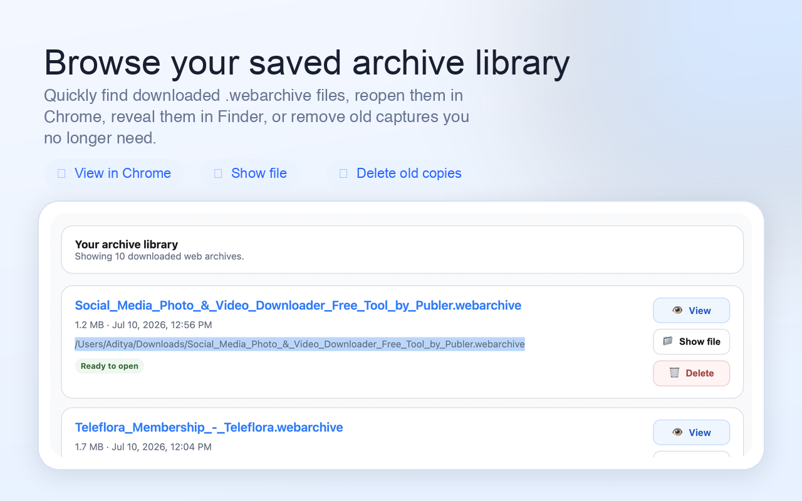
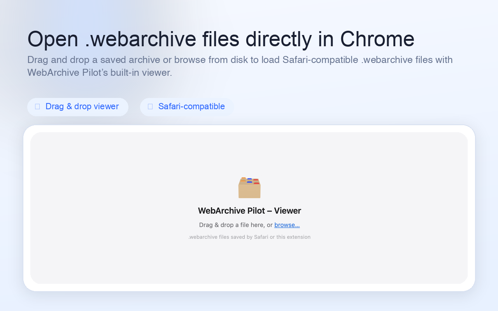
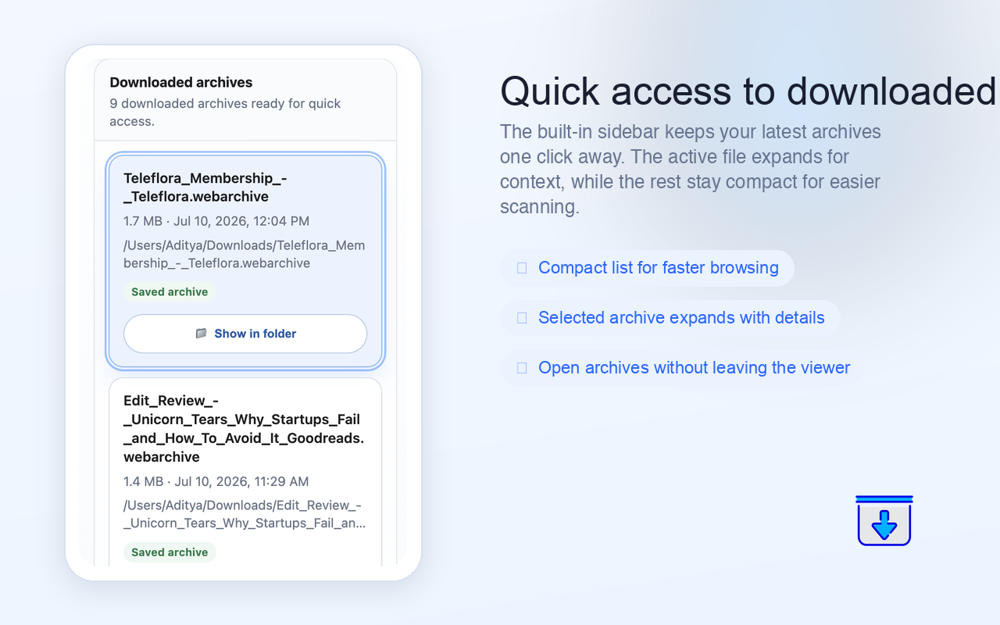

Save the active page as a .webarchive
Capture the page you are currently viewing after it has loaded, then download it as a portable archive file you can reopen later.
WebArchive Pilot captures loaded pages as .webarchive files, helps you manage a
downloadable archive library, and includes a built-in viewer for reopening Safari-compatible
web archives directly in Chrome.
.webarchive files without leaving Chrome.

WebArchive Pilot combines capture, download management, and playback in one focused extension, so archived pages stay practical instead of getting lost in a folder.
.webarchiveCapture the page you are currently viewing after it has loaded, then download it as a portable archive file you can reopen later.
Save all open tabs in the current window, or limit the action to tabs on the left or right of the active tab when you are batching research.
Start archive actions from the browser context menu without opening the popup first, ideal for quick page capture while you browse.
Use the built-in viewer to reopen files saved by this extension or by Safari, including archived HTML, CSS, images, fonts, and other captured resources.
Quickly browse completed downloads, reveal files in Finder, reopen them in the viewer, and remove outdated captures when you no longer need them.
The extension is designed to work on your device using Chrome’s own capture and download capabilities rather than relying on a separate web service.
The experience is simple by design: capture what matters, keep it in a familiar file format, and reopen it whenever you need it again.
WebArchive Pilot uses Chrome’s page capture capabilities to snapshot the loaded tab and rebuild
it into a Safari-compatible .webarchive file.
The finished archive is saved through Chrome’s downloads flow, with a readable filename based on the page title so you can keep an organized local archive.
Use the built-in viewer and archive library to find saved pages again, reopen them in Chrome, and review older captures without switching tools.
These screens show the archive library, the local viewer, and the compact sidebar workflow used to reopen recent files quickly.

.webarchive file directly inside Chrome.

WebArchive Pilot is meant to be a focused utility: capture the pages you choose, download the results to your own device, and keep lightweight local metadata so your archive library stays useful over time.
It is especially useful for research references, changing product pages, documentation snapshots,
authenticated pages that need to be preserved after load, and cross-browser workflows that still
depend on .webarchive.
Each permission exists to support a specific part of the archive workflow and viewer experience.